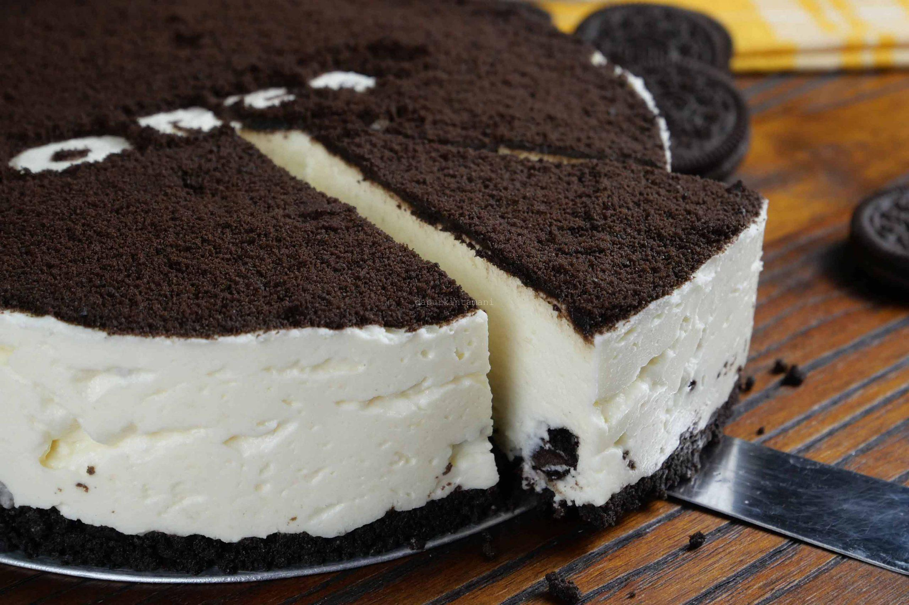

Oreo Cheese Cake
cake image by google
siapa sih yang enggak suka dengan Oreo? Renyah dan manisnya biskuit hitam satu ini selain enak dimakan begitu saja, juga mudah untuk dikreasikan. Mulai dari anak-anak hingga orang dewasa dijamin suka dengan biskuit satu ini. Apalagi jika kamu mencampurkannya dengan krim keju yang creamy, dan sedikit asin, kebayang kan rasanya seperti apa? Ya sudah, langsung saja yuk buat resep masakannya berikut ini.
Resep Oreo Cheese Cake